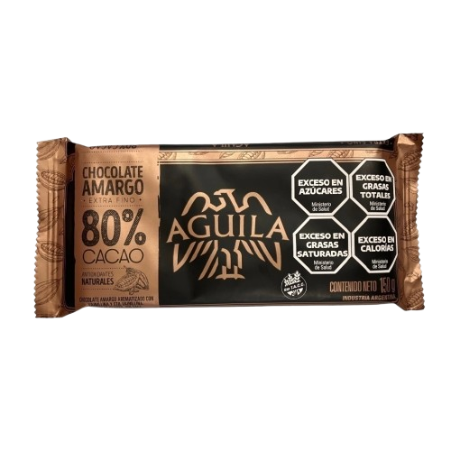
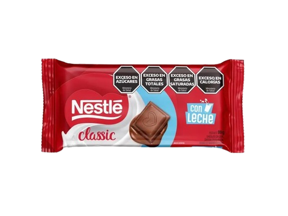
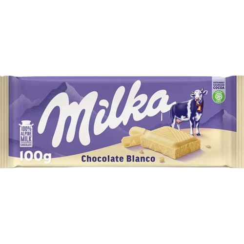

Chocolate amargo Águila

La opción más intensa, con un perfil de sabor "perfectamente amargo" y rico. Es muy utilizado en preparaciones que requieren un chocolate con mucha personalidad o para derretir en el tradicional "submarino".
Chocolate con leche

El chocolate con leche de 80 g de Nestlé (línea Classic) se caracteriza por ser una tableta de textura suave, cremosa e irresistible, elaborada con el sabor auténtico del chocolate con leche tradicional de la marca
Chocolate blanco Milka

El chocolate blanco Milka es reconocido por su textura suave y cremosa, elaborada con leche 100% de los Alpes. Podés encontrarlo en tabletas clásicas de diferentes tamaños o en versiones combinadas con otros sabores e ingredientes.